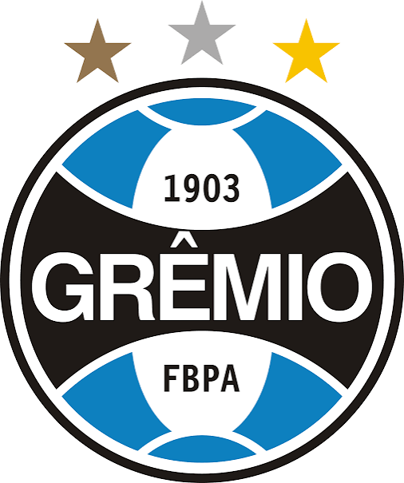
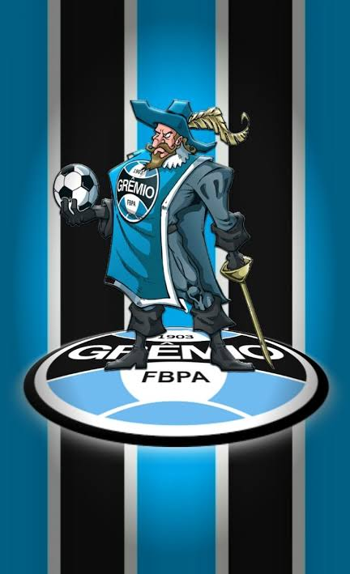

Fundação: 15 de setembro de 1903
O Imortal Tricolor é uma das instituições mais tradicionais e temidas da América do Sul. Com as cores azul, preto e branco, o clube gaúcho forjou sua identidade na garra e no espírito "copeiro", sendo um especialista em grandes decisões de mata-mata.
O Grêmio foi o trampolim para o mundo de ícones do futebol como Ronaldinho Gaúcho. Mas o maior ídolo de sua história é Renato Portaluppi (Renato Gaúcho), que liderou o time aos títulos da Libertadores e do Mundial de Clubes em 1983 como jogador, e retornou décadas depois para conquistar a Libertadores de 2017 como treinador. A mística do clube também é marcada pela famosa "Batalha dos Aflitos" (2005), onde venceu e garantiu acesso mesmo com apenas 7 jogadores em campo.